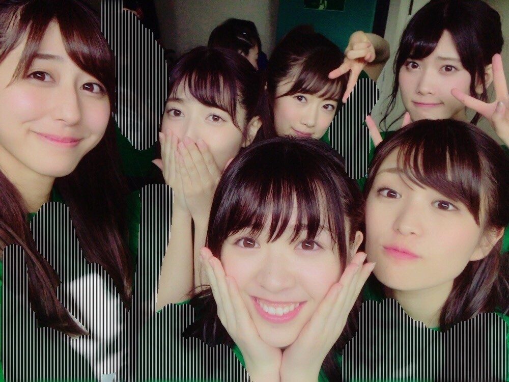
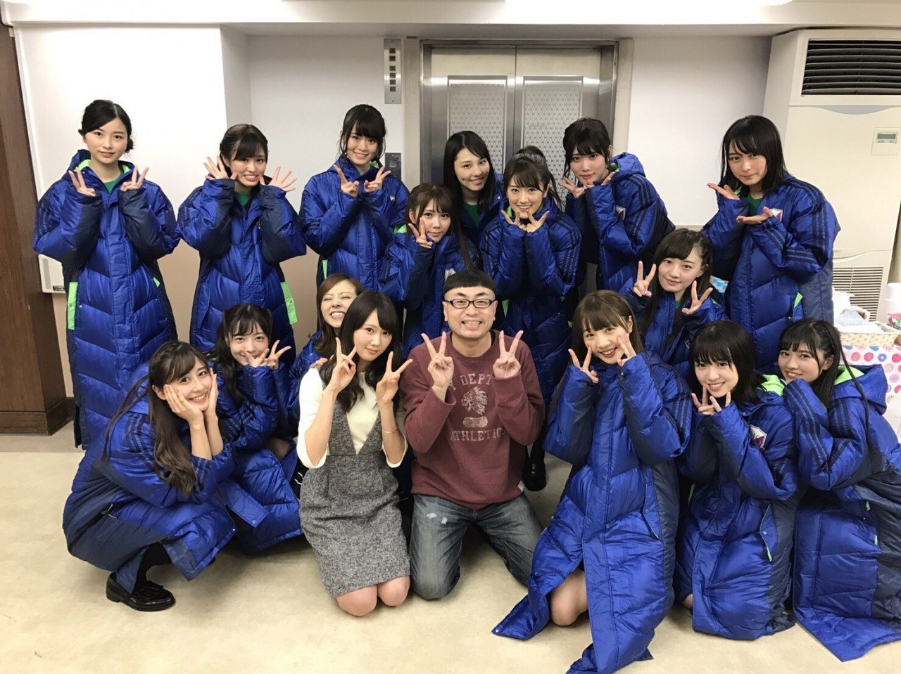

| 2016/12 07 Wed | 第２章。 |
ちはるーむへようこそ！
今日は、Merry X'mas Show 2016
アンダー単独公演の初日でした。
来てくれた皆さんありがとうございました〜！
楽しんでくださいましたか？？♪
私たちはびっくりするくらい
楽しかったです(﹡ˆ ˆ﹡)
アンダーメンバー全員で
良いものをつくりたい！
素敵なものをお届けしたい！という
熱い想いと、
アンダーメンバーの仲の良い
空気感と、
でもここで満足してられない、
もっと前へ進むんだ！という
悔しい気持ちや色々な葛藤。
皆さんに伝わっていたらいいなm(_ _)m


昨日お願いをした「ちはる」コールが
今日のライブ中に聞こえて
物凄く嬉しくなりました\( ˆ ˆ )/
言ってくださった皆さん、ありがとう！！♡
ちゃんと届きました♪
9日に来られる方も、
もし良かったら
「ちはる」コールお願いしますm(_ _)m
9日も楽しみにしていてください(﹡ˆ ˆ﹡)
残念ながら武道館に来れない方は
9日はなんとスカパー!さんの中継が入ります...！！
12/23(金)放送ですので皆さんそちらも是非ご覧ください♪
--------------------------------♡
♬ ChihaMusic
「WINDING ROAD」絢香さん×コブクロさん
御三方の声が本当に
綺麗にマッチしていて
聞いていて心地いいし、
一緒に歌いたくなる...！
そしてとにかく歌詞が良い。
自分を奮い立たせてくれます。
アンダーライブ1日目を終えたからなのか
余計に歌詞が沁みます。
"曲がりくねった道の先に
待っている幾つもの小さな光
まだ遠くて見えなくても
一歩ずつ ただそれだけを
信じていこう"
光を求めてただ前へ歩いていきます。
信じて、一歩一歩。

そして今日イジリーさんと、らりんが
観に来てくださいました！
イジリーさん、アンダーの方も
来てくださって嬉しいなぁ...優しいなぁ...
らりんは卒業以来、初めてのアンダーライブ。
物凄い褒めてくれて嬉しかった...！
足がぱんぱんだ〜(> <)
ゆっくりお風呂に浸かりたいと思います◎
おやすみ〜
斎藤ちはる
コメント(359)
2016/12/07 23:54